FitNMR enables fully automated peak fitting of 2D NMR spectra. This document demonstrates how fitting can be done using R code, various stages of the algorithm, and some of the ways that the results can be visualized. For a description of how a similar workflow can be accomplished using prewritten R scripts that process all the spectra you put in a given directory, see the “Automated 2D Peak Fitting Scripts” document.
The following tutorial will assume you have loaded the FitNMR package.
Sample Data
The first step in peak picking is to load one or more spectra. There are a number of example spectra that come with the FitNMR package. For this tutorial, we will be using spectra from a T1 measurement of a small de novo designed mini-protein. The directory containing that data and the spectrum filenames can be determined with the following commands:
t1_dir <- system.file("extdata", "t1", package="fitnmr") t1_ft2_filenames <- list.files(t1_dir, pattern=".ft2") t1_ft2_filenames #> [1] "1.ft2" "2.ft2"
Reading Spectra
The read_nmrpipe function is used to read NMRPipe-formatted spectra.
To read both files, we will use the lapply function in R. This builds a list data structure by iterating over the items in the first argument and applying the function given in the second argument to each. Any subsequent arguments are passed to the function when it is called. The file.path function joins the directory where the files are located to the file names within that directory.
The dim_order="hx" argument tells read_nmrpipe to reorder the dimensions of the spectra so that the 1H dimension is first. This is important as most default NMRPipe processing scripts will leave the 1H as the second dimension. After reading the list of spectra, we will assign names to each using the original filenames.
spec_list <- lapply(file.path(t1_dir, t1_ft2_filenames), read_nmrpipe, dim_order="hx") names(spec_list) <- t1_ft2_filenames
The underlying data structures used to store the two spectra can be shown with the str function:
str(spec_list) #> List of 2 #> $ 1.ft2:List of 4 #> ..$ int : num [1:66, 1:45] 1243 1033 2060 2653 2102 ... #> .. ..- attr(*, "dimnames")=List of 2 #> .. .. ..$ HN : chr [1:66] "8.6770160099608" "8.66967763204871" "8.66233925413663" "8.65500087622454" ... #> .. .. ..$ N15: chr [1:45] "124.032918497401" "123.917245763118" "123.801573028835" "123.685900294552" ... #> ..$ ppm :List of 2 #> .. ..$ HN : num [1:66] 8.68 8.67 8.66 8.66 8.65 ... #> .. ..$ N15: num [1:45] 124 124 124 124 124 ... #> ..$ fheader: num [1:29, 1:2] 1 4.77 533 2048 799.74 ... #> .. ..- attr(*, "dimnames")=List of 2 #> .. .. ..$ : chr [1:29] "QUADFLAG" "CAR" "CENTER" "FTSIZE" ... #> .. .. ..$ : chr [1:2] "HN" "N15" #> ..$ header : Named num [1:512] 0.00 4.01e+09 2.35 0.00 0.00 ... #> .. ..- attr(*, "names")= chr [1:512] "FDMAGIC" "FDFLTFORMAT" "FDFLTORDER" "" ... #> $ 2.ft2:List of 4 #> ..$ int : num [1:66, 1:45] -679 -355 260 642 413 ... #> .. ..- attr(*, "dimnames")=List of 2 #> .. .. ..$ HN : chr [1:66] "8.6770160099608" "8.66967763204871" "8.66233925413663" "8.65500087622454" ... #> .. .. ..$ N15: chr [1:45] "124.032918497401" "123.917245763118" "123.801573028835" "123.685900294552" ... #> ..$ ppm :List of 2 #> .. ..$ HN : num [1:66] 8.68 8.67 8.66 8.66 8.65 ... #> .. ..$ N15: num [1:45] 124 124 124 124 124 ... #> ..$ fheader: num [1:29, 1:2] 1 4.77 533 2048 799.74 ... #> .. ..- attr(*, "dimnames")=List of 2 #> .. .. ..$ : chr [1:29] "QUADFLAG" "CAR" "CENTER" "FTSIZE" ... #> .. .. ..$ : chr [1:2] "HN" "N15" #> ..$ header : Named num [1:512] 0.00 4.01e+09 2.35 0.00 0.00 ... #> .. ..- attr(*, "names")= chr [1:512] "FDMAGIC" "FDFLTFORMAT" "FDFLTORDER" "" ...
This shows that there is a list of two spectra. Each spectrum is itself a list with four named components:
-
int: A multidimensional array with the intensities of the spectrum, which in this case is just a 2D matrix. The chemical shifts are stored in character format in the dimension names (dimnames) of the array. -
ppm: A list of chemical shifts for each dimension stored in numeric format. -
fheader: A matrix of header values associated each dimension. -
header: The raw data from the 512-value NMRPipe header.
Displaying Spectra
We can produce a contour plot of the first spectrum using the contour_pipe function. It takes a matrix as input, so we must extract the int matrix of the first spectrum with the syntax shown.
contour_pipe(spec_list[[1]]$int)
As you can see above, the spectrum has a number of overlapped peaks with possible shoulders.
Estimating Noise
The automated peak fitting procedure uses the noise level of each spectrum to determine a cutoff below which peaks will no longer be added. FitNMR includes a function, noise_estimate, for determining the noise level by fitting a Gaussian function to a histogram of the signal intensities.
The sapply function below is similar to the lapply function used above, but it attempts to simplify the output of each function into a matrix. In this case, because a vector of three numerical values is returned each time noise_estimate is called, a 3xN matrix (N = the number of spectra) of results is created. Also, because the noise_estimate function just takes numerical intensities, the code below defines a short inline function to extract those from each spectrum.
noise_mat <- sapply(spec_list, function(x) noise_estimate(x$int)) noise_mat #> 1.ft2 2.ft2 #> mu 928.52 385.31 #> sigma 1097.91 739.07 #> max 404348.28 116520.75
The resulting matrix above gives the mean value the noise is centered on (mu), the standard deviation of the noise (sigma), and the maximum intensity in the spectrum (max).
The noise_estimate function can create plots showing the histogram of the intensity values (black) and the fit Gaussian function (blue). S/N is defined as max/sigma.
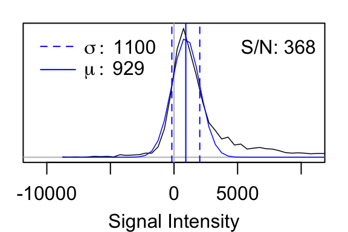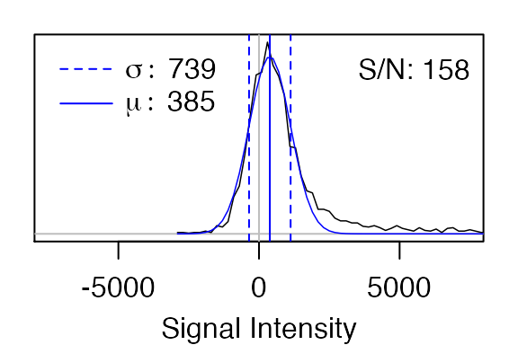
To identify an initial set of peaks, better results will probably be obtained using the spectrum with the highest signal-to-noise ratio, which in this case is the first spectrum.
Fitting Peaks
Fitting a Few Peak Clusters
We will start by running three iterations of the iterative peak fitting method. It takes a list of spectra, which we previously read into spec_list``. In this case, we will only do the fitting on the first spectrum. To get a list of just one spectrum, use single square brackets,[ ], which return another list. (By contrast double square brackets,[[ ]], return individual items from the list that are not enclosed in a list data structure.) Theiter_maxargument infit_peak_iter` specifies the number of iterations to perform.
FitNMR outputs text describing what the peak fitting algorithm is doing. Adding the first peak involves addition of 6 parameters to the model (2 omega0, 2 r2, 1 m0, and 1 scalar coupling). The probability of the observed improvement to the fit happening at random (according to an F-test) is given by the p-value. For the first peak added, this is very low, indicating that having a peak at that position is much better than assuming otherwise. Adding the second peak involves addition of just 3 parameters (2 omega0 and 1 m0), because several of the parameters are shared with the first peak (2 r2 and 1 scalar coupling). For the first iteration, the search is terminated after the third peak fails to fall below the p-value cutoff, which is specified by f_alpha and defaults to 0.001.
The fit_peak_iter function returns a list of fits, one for each iteration. To convert that into a more user-friendly table, use the param_list_to_peak_df function. The first couple columns of that table give the peak number and fit iteration at which the peak was added. If applicable, the F-test p-value will be given next. The following several columns give the peak position (in ppm), the scalar coupling (in Hz), and the R2 (in Hz), with the integer suffix indicating the dimension for each parameter. The remaining columns give the peak volumes from each spectrum.
peak_fits <- fit_peak_iter(spec_list[1], iter_max=3) #> Fit iteration 1: #> 0 -> 6 fit parameters: F = 333.8 (p = 4.56642e-10) #> 6 -> 9 fit parameters: F = 64.6 (p = 1.11899e-05) #> 9 -> 12 fit parameters: F = 1.2 (p = 0.464419) #> Terminating search because F-test p-value < 0.001 #> Fit iteration 2: #> 0 -> 6 fit parameters: F = 734.0 (p = 1.87653e-15) #> 6 -> 9 fit parameters: F = 14.7 (p = 0.000581712) #> 9 -> 12 fit parameters: F = 0.1 (p = 0.976358) #> Terminating search because F-test p-value < 0.001 #> Fit iteration 3: #> 0 -> 6 fit parameters: F = 27.7 (p = 7.52698e-13) #> 6 -> 9 fit parameters: F = 226.0 (p = 2.5923e-27) #> 9 -> 12 fit parameters: F = 13.3 (p = 1.34241e-05) #> 12 -> 15 fit parameters: F = 68.7 (p = 1.46797e-13) #> 15 -> 18 fit parameters: F = 7.0 (p = 0.00144316) #> Terminating search because F-test p-value < 0.001 peak_df <- param_list_to_peak_df(peak_fits) peak_df #> peak fit f_pvalue omega0_ppm_1 omega0_ppm_2 sc_hz_1 r2_hz_1 r2_hz_2 1.ft2 #> 1 1 1 4.5664e-10 8.2476 121.87 3.2806 2.9072 2.3345 824420657 #> 2 2 1 1.1190e-05 8.2596 121.93 3.2806 2.9072 2.3345 240560662 #> 3 3 2 1.8765e-15 8.5400 119.76 2.0000 4.7886 2.0996 1020008726 #> 4 4 2 5.8171e-04 8.5202 119.73 2.0000 4.7886 2.0996 89977216 #> 5 5 3 7.5270e-13 8.6124 123.36 7.6481 5.2849 2.1801 848579189 #> 6 6 3 2.5923e-27 8.5853 123.03 7.6481 5.2849 2.1801 607904936 #> 7 7 3 1.3424e-05 8.6449 123.47 7.6481 5.2849 2.1801 147984411 #> 8 8 3 1.4680e-13 8.5370 122.96 7.6481 5.2849 2.1801 161971930 plot_peak_df(peak_df, spec_list[1], cex=0.6)
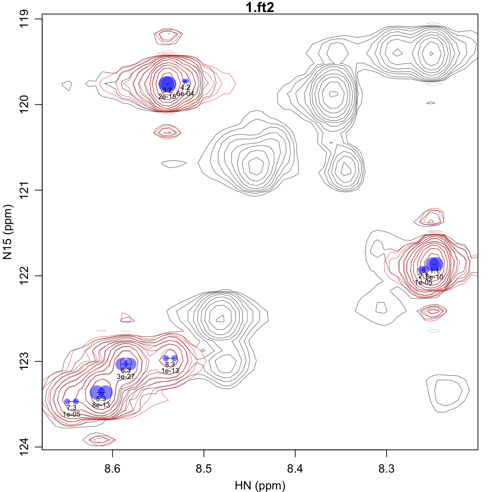
A plot of the resulting peak fits can be produced with the plot_peak_df function, which requires a peak table and list of spectra. It plots the peaks with contours down to 4 times the standard deviation of the noise present in the spectra. The modeled peaks are shown with red contours and the peak centers are indicated with blue dots, with the area of the blue dot proportional to the volume of the peak. Below each set of dots, the peaks are numbered with the syntax, <peak>:<fit>. All peaks in a given fit will share scalar coupling and R2 parameters. If contained in the input table, the F-test p-value will be given below the peak number. This can be helpful in optimizing the the f_alpha parameter to avoid false negatives while minimizing the number of false positives.
A Peek Inside the Algorithm
To take a more detailed look inside a single iteration of the algorithm, the fit_peak_iter function can be called again, providing the output of the first time it was run using the fit_list parameter. By setting the plot_fit_stages parameter to TRUE, FitNMR will produce a series of plots illustrating the progress of the algorithm.
A given iteration starts with placing a peak at the highest point in the spectrum, after all previously modeled peaks have been subtracted out. It first optimizes m0, leaving the omega0, r2, and sc parameters at their default values. The resulting peak is shown in the first plot, with red dots at the peak centers and lines ±r2 for each dimension.
After obtaining an initial volume, the peak shape is allowed to change by unfixing the r2 and sc parameters. Subsequent plots show contours of peaks modeled with the input parameters in blue, and the fit parameters in red. Finally, the peak is allowed to move by unfixing the omega0 parameters, with the center of each multiplet constrained to ±1.5*r2, as indicated by the gray square.
peak_fits <- fit_peak_iter(spec_list[1], iter_max=1, fit_list=peak_fits, plot_fit_stages=TRUE) #> Fit iteration 1:
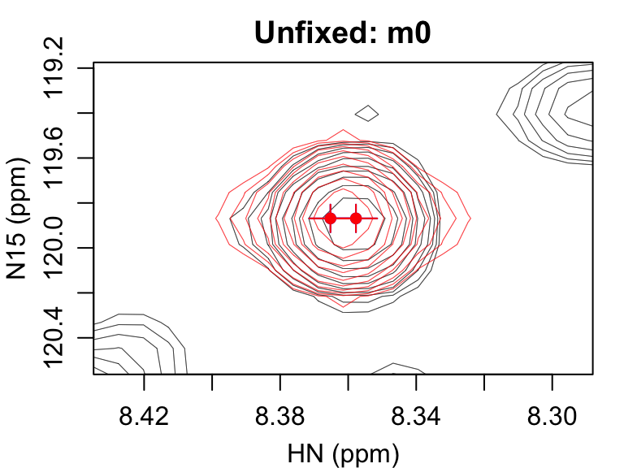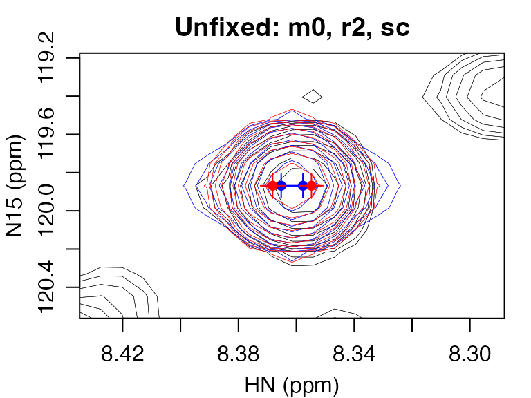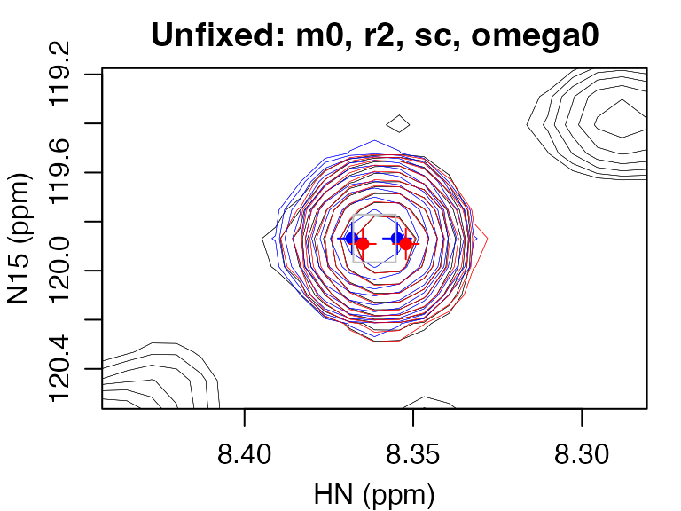
#> 0 -> 6 fit parameters: F = 2022.7 (p = 1.60653e-20) 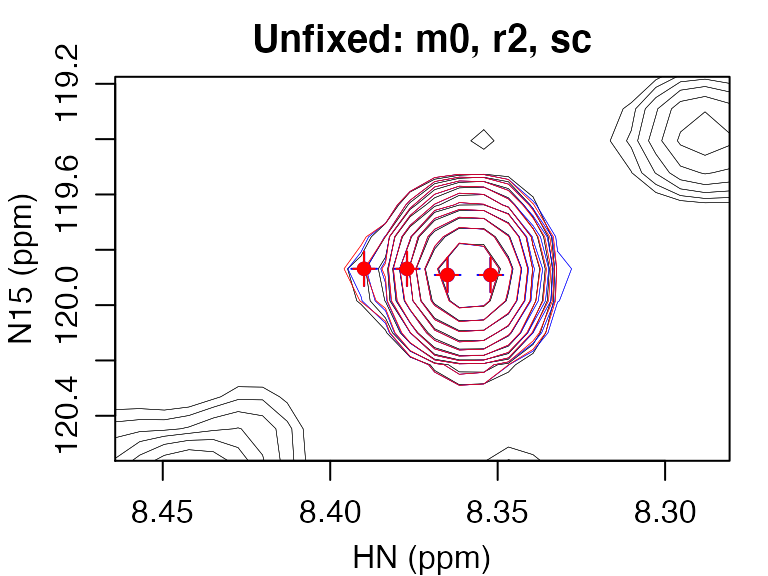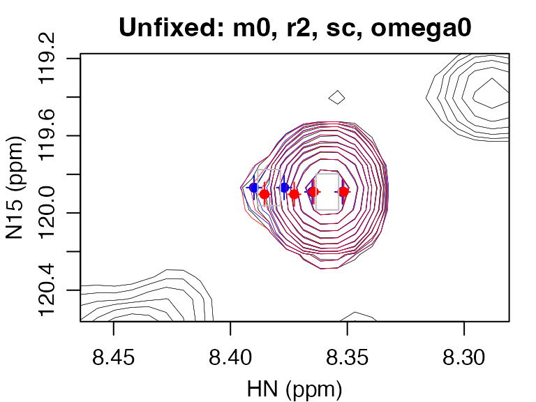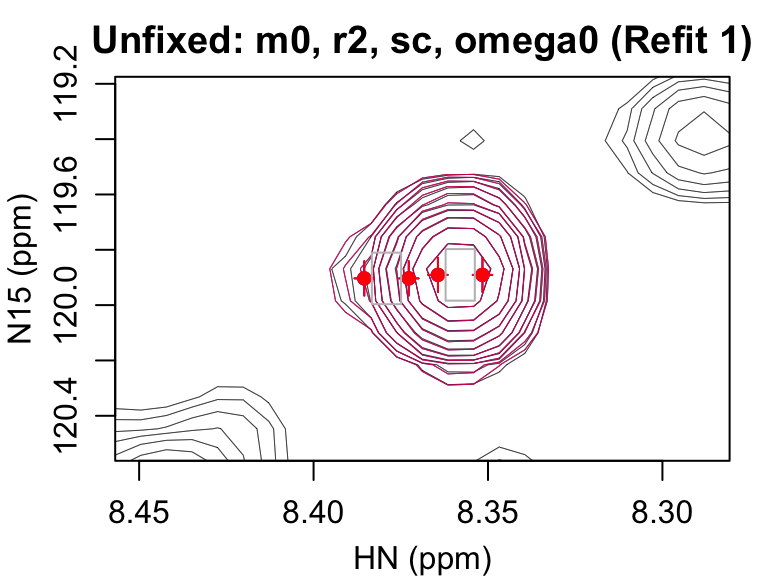
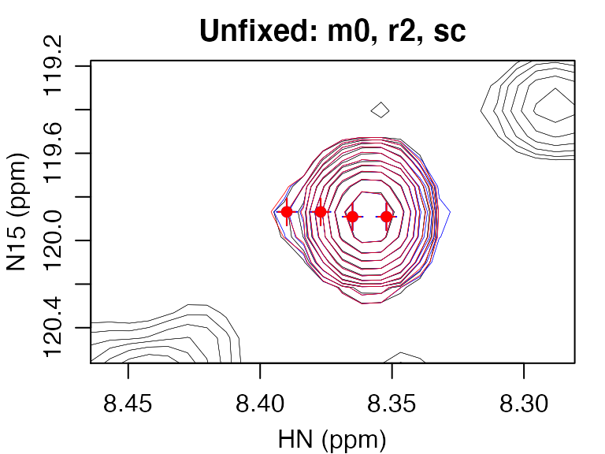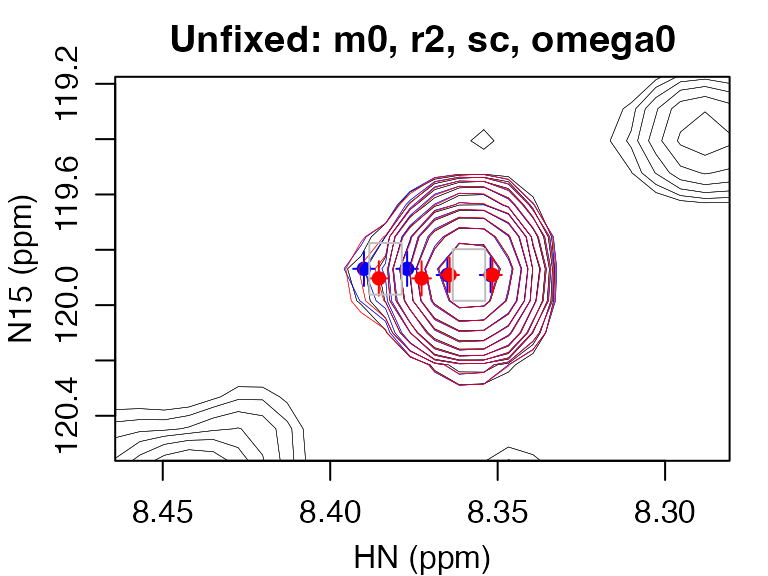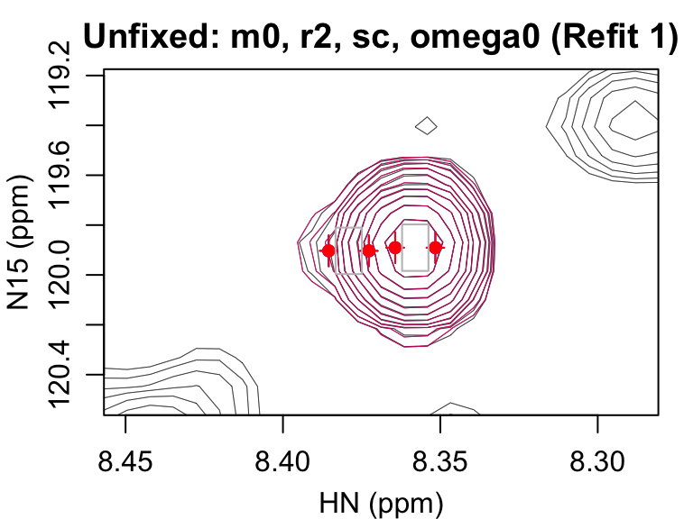
#> 6 -> 9 fit parameters: F = 14.0 (p = 0.000228688)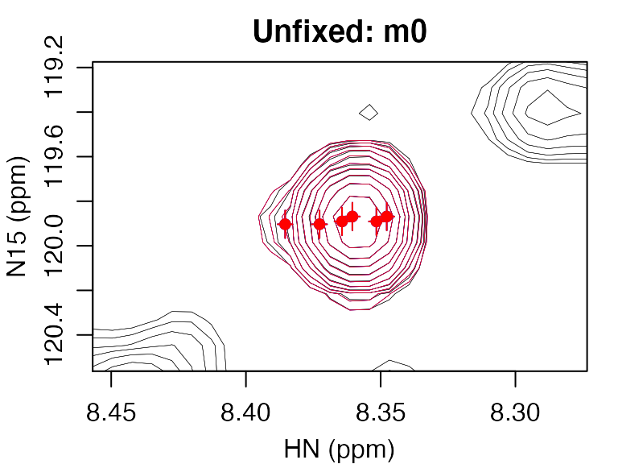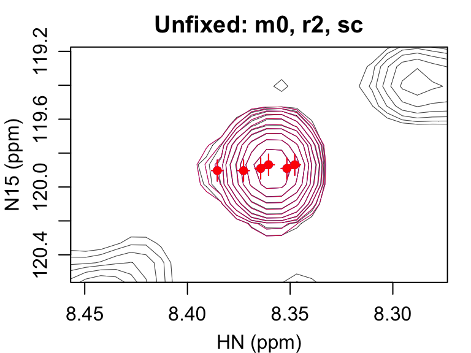
#> Terminating search because fit produced zero volumeIn this case, the last peak added was too close to the first and when all parameters were unfixed, one of the peaks had zero volume, which resulted in termination of this iteration. In this fit, the shoulder peak is present, but is less than 10% of the volume of the major peak. (See fit 4 in the peak lists below.) The newly added peak cluster is outlined in green in the following spectrum.
plot_peak_df(param_list_to_peak_df(peak_fits), spec_list[1], cex=0.6) rect(8.41, 120.6, 8.31, 119.2, border="green") text(8.31, 119.9, "New Cluster", pos=4, col="green")
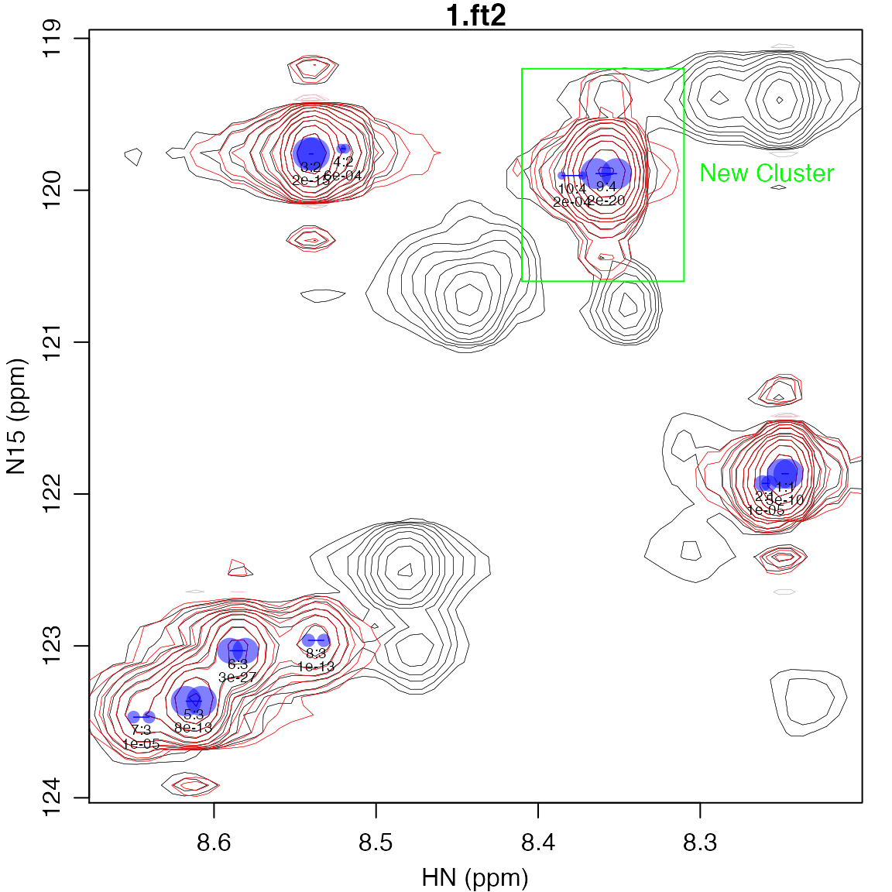
Fitting the Remainder of the Peaks
To fit the remainder of the peaks, call the fit_peak_iter function again, this time leaving out the iter_max parameter so that the default value (100) is used.
peak_fits <- fit_peak_iter(spec_list[1], fit_list=peak_fits) #> Fit iteration 1: #> 0 -> 6 fit parameters: F = 107.8 (p = 9.74212e-11) #> 6 -> 9 fit parameters: F = 260.6 (p = 2.04021e-13) #> 9 -> 12 fit parameters: F = 11.0 (p = 0.00161564) #> Terminating search because F-test p-value < 0.001 #> Fit iteration 2: #> 0 -> 6 fit parameters: F = 1219.7 (p = 6.27674e-21) #> 6 -> 9 fit parameters: F = 174.9 (p = 1.74543e-15) #> 9 -> 12 fit parameters: F = 42.3 (p = 8.00775e-09) #> 12 -> 15 fit parameters: F = 11.8 (p = 0.000186865) #> 15 -> 18 fit parameters: F = 1.6 (p = 0.223018) #> Terminating search because F-test p-value < 0.001 #> Fit iteration 3: #> 0 -> 6 fit parameters: F = 232.0 (p = 1.0692e-22) #> 6 -> 9 fit parameters: F = 15.9 (p = 1.99824e-06) #> 9 -> 12 fit parameters: F = 54.3 (p = 1.15821e-11) #> Terminating search because fit produced zero volume #> Fit iteration 4: #> 0 -> 6 fit parameters: F = 330.9 (p = 1.75035e-07) #> 6 -> 9 fit parameters: F = 1.8 (p = 0.274918) #> Terminating search because F-test p-value < 0.001 peak_df <- param_list_to_peak_df(peak_fits) peak_df #> peak fit f_pvalue omega0_ppm_1 omega0_ppm_2 sc_hz_1 r2_hz_1 r2_hz_2 1.ft2 #> 1 1 1 4.5664e-10 8.2476 121.87 3.2806 2.9072 2.33450 824420657 #> 2 2 1 1.1190e-05 8.2596 121.93 3.2806 2.9072 2.33450 240560662 #> 3 3 2 1.8765e-15 8.5400 119.76 2.0000 4.7886 2.09965 1020008726 #> 4 4 2 5.8171e-04 8.5202 119.73 2.0000 4.7886 2.09965 89977216 #> 5 5 3 7.5270e-13 8.6124 123.36 7.6481 5.2849 2.18012 848579189 #> 6 6 3 2.5923e-27 8.5853 123.03 7.6481 5.2849 2.18012 607904936 #> 7 7 3 1.3424e-05 8.6449 123.47 7.6481 5.2849 2.18012 147984411 #> 8 8 3 1.4680e-13 8.5370 122.96 7.6481 5.2849 2.18012 161971930 #> 9 9 4 1.6065e-20 8.3580 119.89 10.2029 2.2306 5.03575 875241831 #> 10 10 4 2.2869e-04 8.3791 119.90 10.2029 2.2306 5.03575 62766713 #> 11 11 5 9.7421e-11 8.2506 119.41 6.3683 4.9091 1.85341 732475431 #> 12 12 5 2.0402e-13 8.2900 119.38 6.3683 4.9091 1.85341 181301641 #> 13 13 6 6.2767e-21 8.4826 122.50 9.1982 5.0619 2.03464 475854299 #> 14 14 6 1.7454e-15 8.4629 122.91 9.1982 5.0619 2.03464 28166195 #> 15 15 6 8.0078e-09 8.4768 123.03 9.1982 5.0619 2.03464 92626742 #> 16 16 6 1.8687e-04 8.4786 122.43 9.1982 5.0619 2.03464 105607485 #> 17 17 7 1.0692e-22 8.4433 120.73 7.1444 6.3350 2.97224 460752250 #> 18 18 7 1.9982e-06 8.4251 120.46 7.1444 6.3350 2.97224 97674580 #> 19 19 7 1.1582e-11 8.4663 120.51 7.1444 6.3350 2.97224 62014526 #> 20 20 8 1.7504e-07 8.3444 120.76 8.6176 1.9530 0.86044 105614247 plot_peak_df(peak_df, spec_list[1], cex=0.6)
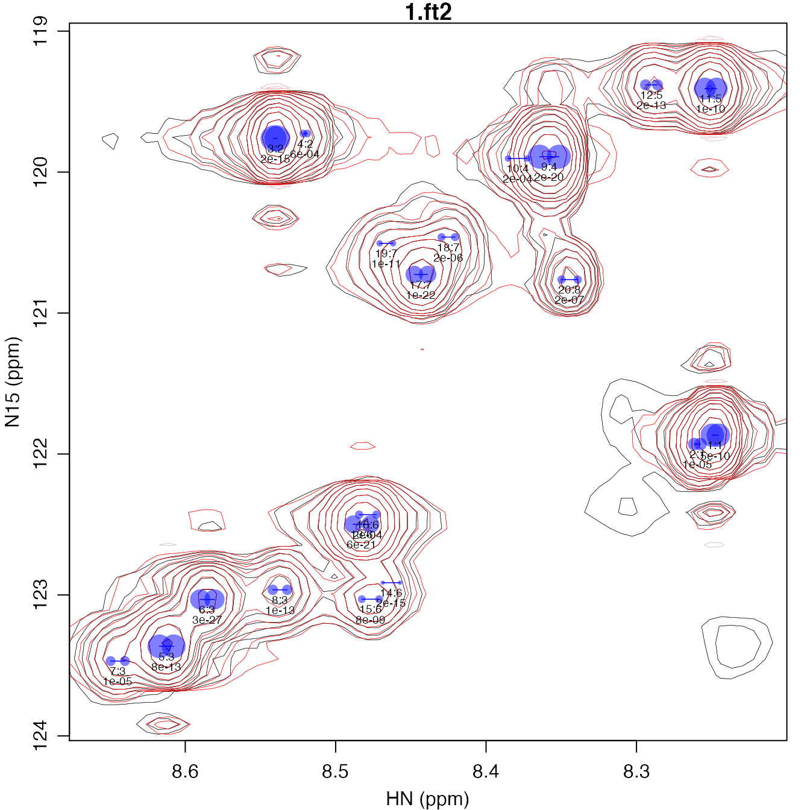
Fitting Peaks without Scalar Couplings
Scalar couplings are only fit for specified dimensions. The only type of splitting pattern currently supported is a doublet. The particular dimensions for which scalar couplings are fit is specified with the sc_start parameter, which should be a two-element numeric vector. The first element of that vector gives the starting value of the scalar coupling in the first dimension, and likewise the second element for the second dimension. If a given dimension is set to NA, then it will not have a doublet generated. If sc_start is left at the default value of c(6, NA), then there will just be a doublet fit in the first dimension, with only a single peak fit in the second dimension. To disable scalar couplings altogether, set sc_start to c(NA, NA).
peak_fits_no_sc <- fit_peak_iter(spec_list[1], sc_start=c(NA, NA)) plot_peak_df(param_list_to_peak_df(peak_fits_no_sc), spec_list[1], cex=0.6) rect(8.55, 122.8, 8.43, 122.1, border="green") text(8.43, 122.5, "Coupling\nDetected\nde novo", pos=4, col="green")
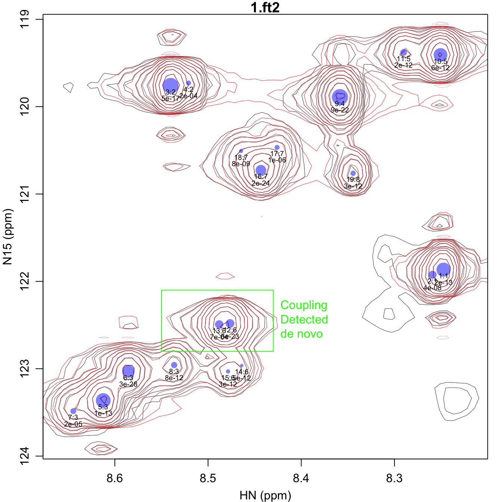
Many of the peaks in the above plot can be fit reasonably well without scalar couplings, but the contours do not necessarily match up as well. For one peak boxed in green above, a scalar coupling is detected de novo by the fitting algorithm, with two adjacent peaks having roughly the same volume.
Editing Fit Clusters
Separating Fit Clusters
After performing an initial fit, there may be large clusters of peaks that can be separated into different clusters and refit to allow the peak shapes to take on different values. For instance, peaks 5 and 7 shown in “Splitting the Reminder of Peaks” above are sufficiently separated from peaks 6 and 8 in both the vertical and horizontal dimensions, such that it should be possible to fit different peak shape parameters. To separate them out into their own cluster, reassign them a new “fit” cluster that is greater than any other fit group.
Deleting Peaks
Furthermore, you may find that the algorithm has been overzealous and detected peaks that do not appear to be real after visual inspection, for instance peaks 4, 14, and 16. To remove them, simply remove their rows from the peak table. In this case we use the the feature of R that removes elements using a negative index:
edited_peak_df <- edited_peak_df[-c(4,14,16),]
Even if you don’t separate groups or delete peaks, it may be helpful to perform a simultaneous fit of all peaks together to remove bias that may have accumulated because of overlap between groups of peaks that were originally fit separately. To do so, you need to convert the peak table back a fit fit input. That is done with the peak_df_to_fit_input function, which requires the peak table, the set of spectra, and the size of the region of interest around each peak where fitting will be done.
Also, you will need to manually update the lower and upper bounds for parameters, which is done automatically with fit_peak_iter. Here we use update_fit_bounds to constrain omega0 within 1.5 times r2 of the starting value, r2 to be in the range of 0.5-20 Hz, and the scalar coupling to be in the range of 2-12 Hz. Finally, we do the fit using the perform_fit function.
refined_fit_input <- peak_df_to_fit_input(edited_peak_df, spec_list[1], omega0_plus=c(0.075, 0.75)) refined_fit_input <- update_fit_bounds(refined_fit_input, omega0_r2_factor=1.5, r2_bounds=c(0.5, 20), sc_bounds=c(2, 12)) refined_fit_output <- perform_fit(refined_fit_input) refined_peak_df <- param_list_to_peak_df(refined_fit_output) refined_peak_df #> peak fit omega0_ppm_1 omega0_ppm_2 sc_hz_1 r2_hz_1 r2_hz_2 1.ft2 #> 1 1 1 8.2476 121.87 3.3464 2.8966 2.31700 823653909 #> 2 2 1 8.2596 121.93 3.3464 2.8966 2.31700 239523089 #> 3 3 2 8.5395 119.76 2.0000 5.7031 2.07497 1120869405 #> 5 4 3 8.6123 123.37 9.4647 3.2949 2.36755 777520645 #> 6 5 4 8.5853 123.04 6.0584 6.5825 1.79531 632570914 #> 7 6 3 8.6439 123.45 9.4647 3.2949 2.36755 163968213 #> 8 7 4 8.5370 122.96 6.0584 6.5825 1.79531 151176016 #> 9 8 5 8.3575 119.89 10.1574 1.7355 4.73942 803199446 #> 10 9 5 8.3749 119.90 10.1574 1.7355 4.73942 96757331 #> 11 10 6 8.2506 119.41 6.0938 5.0267 1.77681 731298695 #> 12 11 6 8.2901 119.38 6.0938 5.0267 1.77681 180468792 #> 13 12 7 8.4819 122.49 9.4013 5.0804 2.41289 587356398 #> 15 13 7 8.4745 123.01 9.4013 5.0804 2.41289 108282766 #> 17 14 8 8.4433 120.73 9.1220 4.8622 3.19641 436460816 #> 18 15 8 8.4244 120.47 9.1220 4.8622 3.19641 95394763 #> 19 16 8 8.4672 120.52 9.1220 4.8622 3.19641 64410776 #> 20 17 9 8.3442 120.76 8.3984 1.5895 0.91163 97880231 plot_peak_df(refined_peak_df, spec_list[1], cex=0.6)
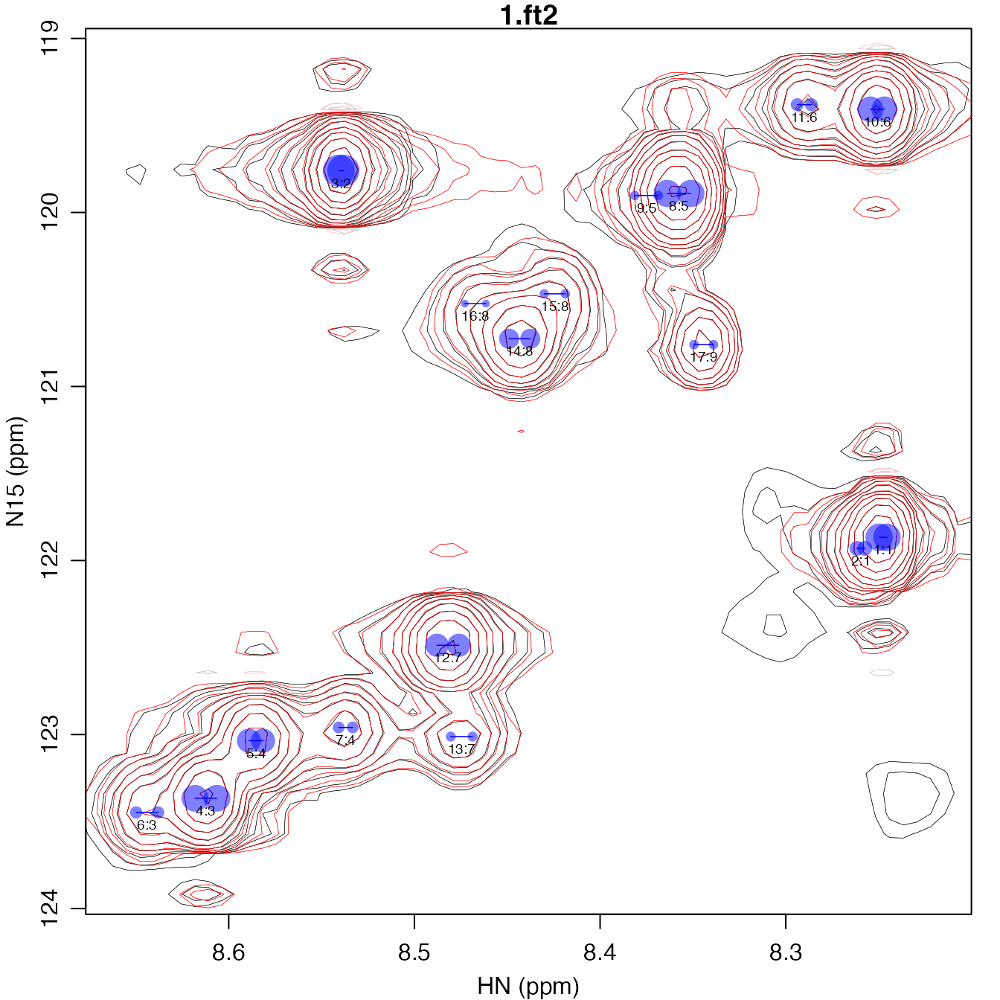
Extending the Fit to Other Spectra
If you have a series of spectra with similar peak shapes, as in this case, you can then extend the fit to more than one spectrum in a manner similar to how we produced the refined peak table above, but instead giving a list of multiple spectra to peak_df_to_fit_input.
extended_fit_input <- peak_df_to_fit_input(refined_peak_df, spec_list, omega0_plus=c(0.075, 0.75))
We can take a peek at the parameters that show the starting volumes for the refined and extended fits as shown below. Note that the starting volumes for the second spectrum is a second column in the m0 matrix, which has inherited the volumes from the first spectrum. After performing the fit, the second spectrum has much lower volumes.
head(refined_fit_output$fit_list$m0) #> [,1] #> [1,] 411826954 #> [2,] 411826954 #> [3,] 119761545 #> [4,] 119761545 #> [5,] 560434702 #> [6,] 560434702 head(extended_fit_input$start_list$m0) #> [,1] [,2] #> [1,] 411826954 411826954 #> [2,] 411826954 411826954 #> [3,] 119761545 119761545 #> [4,] 119761545 119761545 #> [5,] 560434702 560434702 #> [6,] 560434702 560434702 extended_fit_input <- update_fit_bounds(extended_fit_input, omega0_r2_factor=1.5, r2_bounds=c(0.5, 20), sc_bounds=c(2, 12)) extended_fit_output <- perform_fit(extended_fit_input) extended_peak_df <- param_list_to_peak_df(extended_fit_output) extended_peak_df #> peak fit omega0_ppm_1 omega0_ppm_2 sc_hz_1 r2_hz_1 r2_hz_2 1.ft2 2.ft2 #> 1 1 1 8.2477 121.87 3.5990 2.8622 2.31689 830842209 210047866 #> 2 2 1 8.2597 121.93 3.5990 2.8622 2.31689 229341270 95117365 #> 3 3 2 8.5396 119.76 2.0000 5.7375 2.07965 1123239155 321223317 #> 5 4 3 8.6124 123.37 9.4971 3.2734 2.36572 776957582 219067212 #> 6 5 4 8.5854 123.04 5.9568 6.6395 1.78841 634197446 174862251 #> 7 6 3 8.6441 123.45 9.4971 3.2734 2.36572 162742659 48844731 #> 8 7 4 8.5370 122.96 5.9568 6.6395 1.78841 151478910 42110074 #> 9 8 5 8.3576 119.89 10.1415 1.8255 4.77580 811481657 234014667 #> 10 9 5 8.3747 119.90 10.1415 1.8255 4.77580 90684748 46955496 #> 11 10 6 8.2507 119.41 6.0253 5.0653 1.80271 733711506 210530936 #> 12 11 6 8.2902 119.38 6.0253 5.0653 1.80271 180068078 51782211 #> 13 12 7 8.4820 122.49 9.4837 5.0140 2.39974 585468868 171083375 #> 15 13 7 8.4746 123.01 9.4837 5.0140 2.39974 107909300 35712860 #> 17 14 8 8.4434 120.73 9.0403 4.9595 3.20275 438456400 123241978 #> 18 15 8 8.4246 120.47 9.0403 4.9595 3.20275 96468436 24991594 #> 19 16 8 8.4672 120.52 9.0403 4.9595 3.20275 63361999 21694761 #> 20 17 9 8.3444 120.76 8.3617 1.6683 0.87464 98061407 35062473 plot_peak_df(extended_peak_df, spec_list, cex=0.6)
This is the fit for 1.ft2.
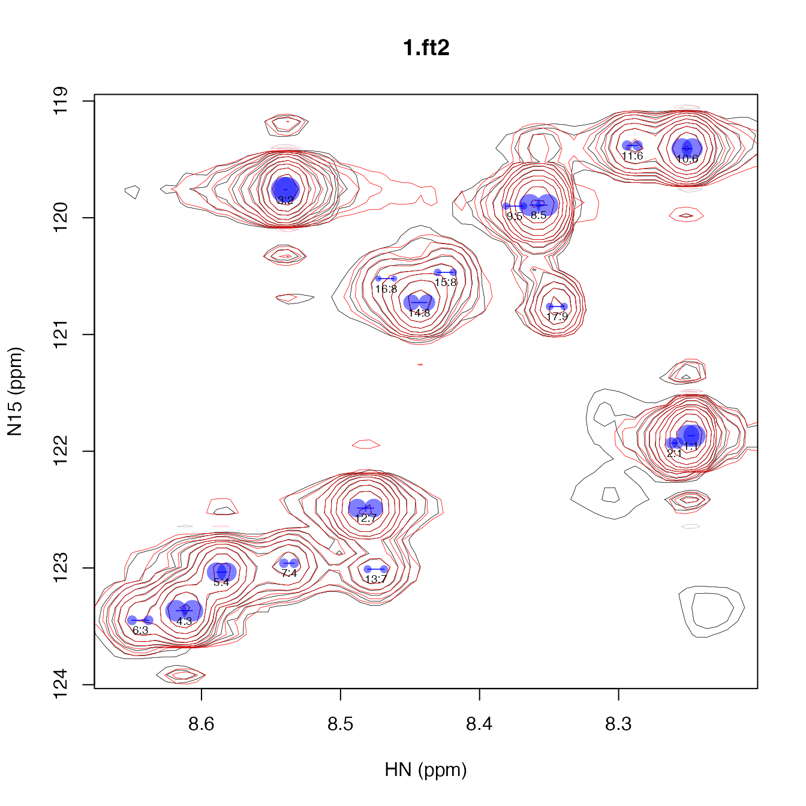
The fit for 2.ft2 looks nearly identical but the peaks are about fourfold less intense than 1.ft2. You can tell this because the lowest contour level in the plot below is slightly narrower than in the plot above. (Remember that the lowest contour level is drawn at 4x the noise level for all plots drawn by plot_peak_df.)
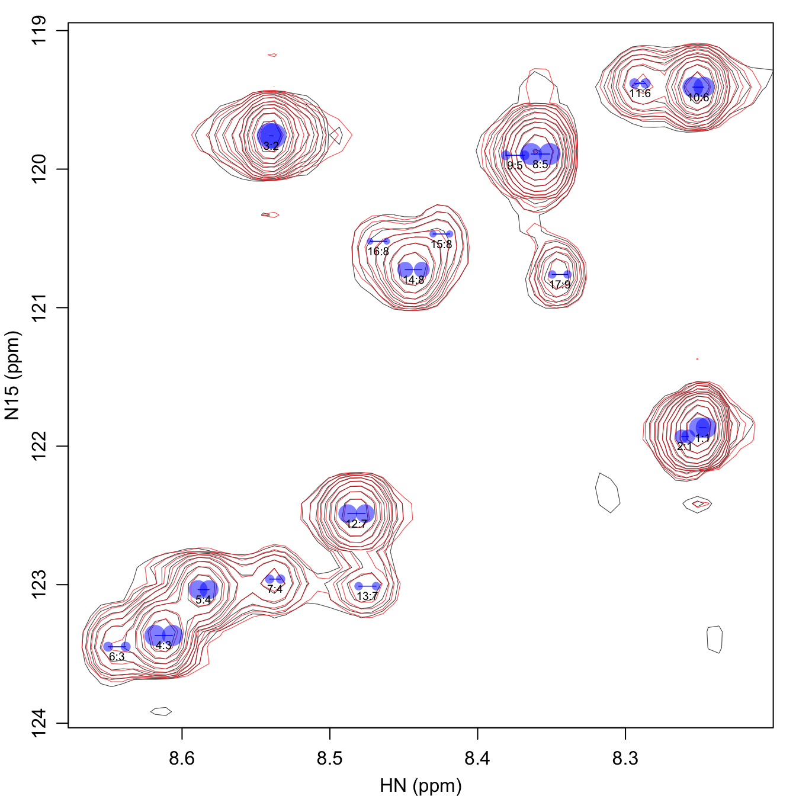
The peak volumes between the two spectra are highly correlated and have similar relative ratios, indicating that the T1 values are for the peaks are relatively similar.
xlim <- range(0, extended_peak_df[,"1.ft2"]) ylim <- range(0, extended_peak_df[,"2.ft2"]) plot(extended_peak_df[,c("1.ft2", "2.ft2")], xlim=xlim, ylim=ylim) abline(lsfit(extended_peak_df[,"1.ft2"], extended_peak_df[,"2.ft2"]), col="red")
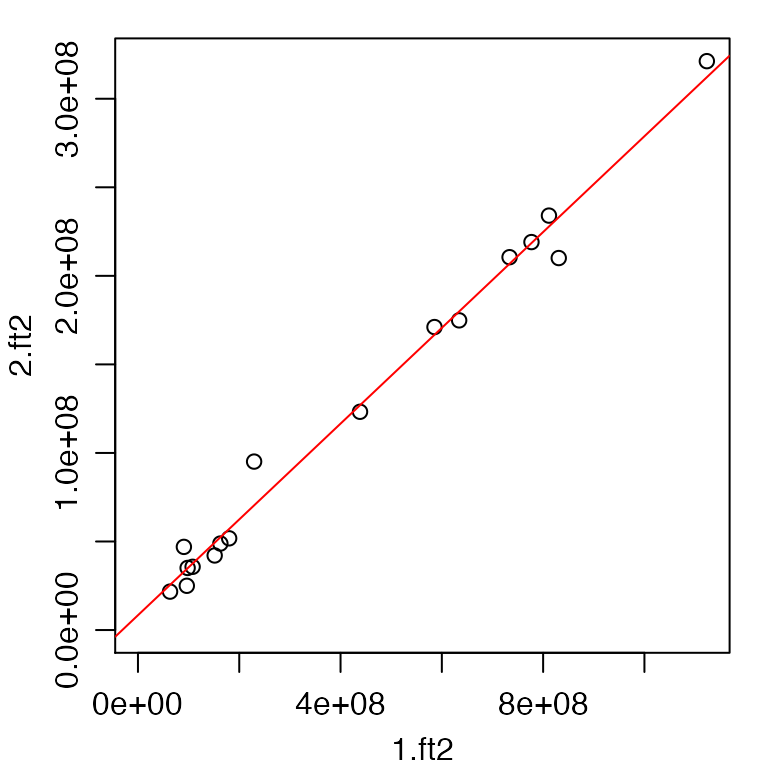
plot(extended_peak_df[,"2.ft2"]/extended_peak_df[,"1.ft2"], xlab="Peak Number", ylab="Spectrum 2 Volume/Spectrum 1 Volume")
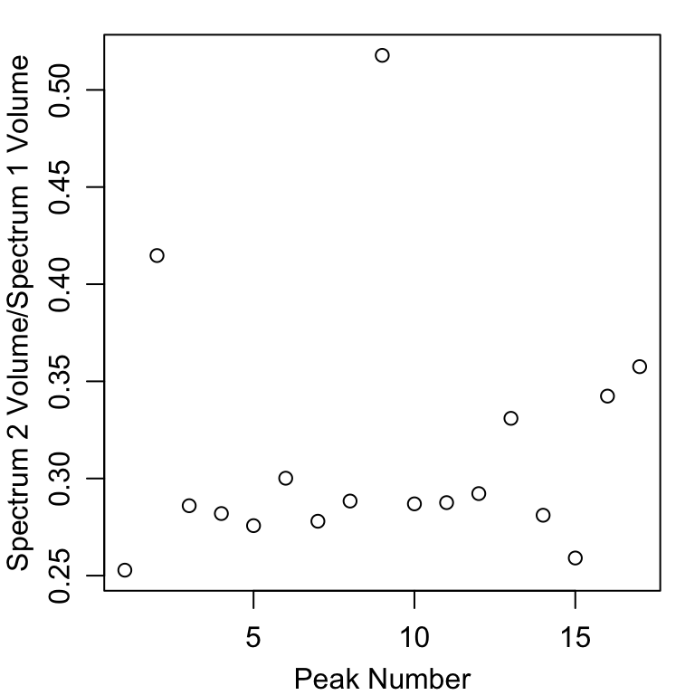